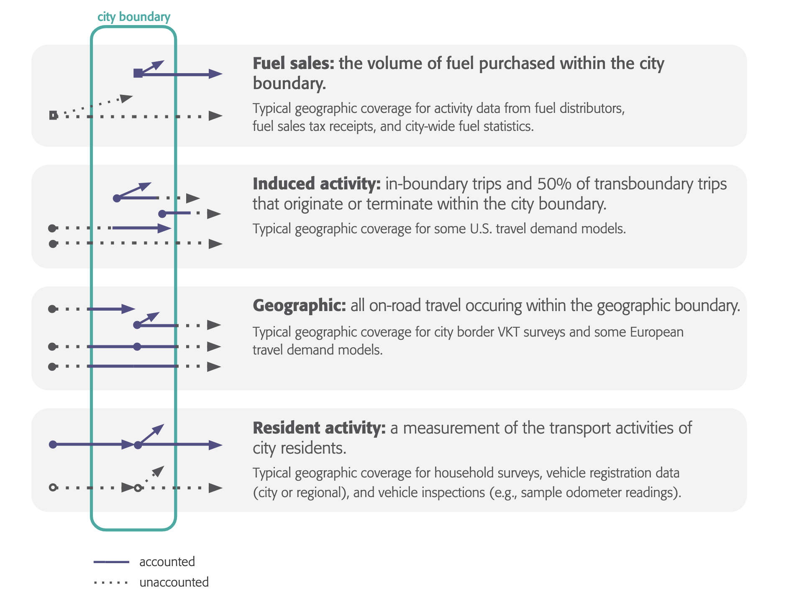

| Attribute | Inventory of US Greenhouse Gas Emissions and Sinks (US GHGI) | National Emissions Inventory (NEI) | MPCA Minnesota statewide inventory | Previous Met Council Inventory |
|---|---|---|---|---|
Appendix F — Transportation methods comparison
Council staff reviewed available data sources and emissions quantification methodologies as part of CCAP data development and to inform discussions with various partners.
The EPA provides many datasets and tools for estimating and forecasting greenhouse gas emissions.
We used the EPA National Emissions Inventory (NEI), EQUATES, and Air Emissions Modeling Platforms, all of which produce data in SMOKEFF10 formats and use EPA MOVES. Each is detailed in Section 3.1. All of the data sources use a territorial or geographic, bottom-up approach.
We also considered the Inventory of U.S. Greenhouse Gas Emissions and Sinks (US GHGI) (USEPA 2024a). US GHGI is the EPA’s official, annual national report submitted to the United Nations Framework Convention on Climate Change (UNFCCC). It employs a top-down methodology based primarily on national fuel sales and energy consumption data. More information on the US GHGI is available on the EPA website.
While both the MOVES-based EPA inventories and US GHGI provide valuable insights, they differ substantially in purpose and scale. The NEI offers finer spatial resolution and source-specific data, whereas the US GHGI provides national-level consistency and comparability over time.
We selected the MOVES-based inventories as the foundation for our baseline inventory because they
- Offer a consistent time series (2005-2022) and definitions over multiple cycles
- Provide consistent county-level data
- Provide data compatible with regional travel demand model outputs
- Compatible with our own MOVES runs with regional travel demand model outputs
- Facilitates consistency with both historical and projected emissions estimates
F.1 On-road transportation accounting methods
All emissions estimation methods involve trade-offs between accuracy, data availability, and interpretability. Multiple approaches can be valid and useful depending on the context and policy goals (Lylykangas et al. 2023). Starting from version 2.0.0 of this document, we are using a geographic VMT-based method to account for transportation emissions.
Both territorial and activity-induced methods are detailed as valid methods for estimating Scope 1 emissions by the GPC (Fong et al. 2021).
Key concepts
Most emissions inventories fall into two approaches
- Top-down approaches start with fuel consumption or sales data as a proxy for transportation activity (Fong et al. 2021). These approaches will then attempt to disaggregate by vehicle types and other identifiable fuel users. Examples include the US GHGI.
- Bottom-up approaches begin with activity data, such as vehicle miles traveled or trip counts, and use additional data, like mode-share, energy intensity, and fuel factors to estimate emissions (Schipper, Fabian, and Leather 2009).
Additionally, inventory methods can be categorized by how they attribute various activity measures to individuals and geographic areas.

F.1.1 Geographic
Geographic or territorial methods account for any transportation emissions taking place within a geographic boundary, regardless of origin or destination (Fong et al. 2021). Under this framework, all fuel combustion and associated emissions that take place within the city, county, or region are attributed to that geography.
This approach aligns closely with traditional environmental monitoring and regulatory frameworks, such as those used for air quality management, because it captures all emissions that affect the atmosphere and air quality within the boundary. By representing the total emissions occurring in a specific area, the geographic method provides a clear picture of local environmental burden, pollution exposure, and aggregate GHG totals.
This approach is particularly valuable for understanding air pollution exposure and total emissions within an area. However, it does not reflect the travel behavior or policy influence of residents and workers.
For example, in the Twin Cities region, small towns located along major freeways may show disproportionately high emissions per capita. While these emissions physically occur within the town’s boundary, local residents are not the primary drivers of the activity, nor do local governments have jurisdiction over freeway traffic.
F.1.2 Induced activity
Induced activity, activity-induced, or city-induced activity, methods remedy the responsibility gap left in geographic methods.
Activity-induced methods estimate the emissions from trips that begin, end, or both begin and end within a given geographic boundary. All pass-through trips (those that neither begin or end in the geographic boundary, but pass through without stopping) are excluded. To find the estimated number of vehicle miles traveled (VMT), the estimated number of vehicles and the average trip length in miles for all origin - destination pairs and vehicle types (passenger, medium-duty, and heavy-duty) are multiplied. Then, the VMT are attributed equally (50%/50%) between the origin and destination geographies. In cases where trips begin and end in the same geography, all VMT and emissions are attributed to that geography. Further details on this method can be found here.
The activity-induced method most comprehensively covers the emissions caused by a given city or county, such as commuting and intra-city trips, thus within its area of influence (Dünnebeil et al. 2012).
The Metropolitan Council previously used the activity-induced method in both the 2018 Metro Climate Stats inventory and the regional PCAP.
The GPC generally recommends the activity-induced method for cities, as it better supports policy decision-making, though notes the geographic method as a viable alternative depending on data availability. However, given the large geographic and jurisdictional diversity of the 11-county Twin Cities CPRG study area, spanning over 250 cities ranging in population from fewer than 500 to over 400,000, a purely activity-induced method presents major data and modeling challenges.
The induced activity approach has several limitations
- Trips that start outside the region, such as those that begin or end outside the state, may not be accounted for, depending on the data source and quantification method.
- Origin-destination pair data can be derived from several data sources, including some travel demand models and data providers, like StreetLight Data, Replica, and other Big Data sources. However, maintaining, validating, and comparing these data over time is difficult and often inconsistent.
- Trips that neither start nor end in the geographic boundary (pass-through) are not accounted for. For example, residents of a city with a major freeway are exposed to the pollution of pass-through traffic, but because that traffic neither starts nor ends in the city, it is not included.
- Existing literature provides limited guidance for forecasting emissions using this method, reducing its applicability for long-term projections.
- Depending on assumptions made, heavy commercial vehicle traffic that starts or ends, but not starts and ends, may be excluded.
The induced-activity or origin-destination method is used in regional PCAPs, including metro areas such as Santa Clara MSA (County of San Benito and County of Santa Clara 2024) and the Southern California Association of Governments (SCAG 2024).
F.1.3 Consumption-based
Consumption-based emissions inventories (CBEIs) are a calculation of all of the greenhouse gas emissions associated with the production, transportation, use and disposal of products and services consumed by a particular community or entity in a given time period (Broekhoff, Erickson, and Piggot 2019). Rather than assigning emissions to the location where they physically occur—as in production- or activity-based inventories—CBEIs attribute emissions to the end consumers of products and services. Emissions are modeled from massive datasets containing demographic, economic, and consumer information (EcoDataLab 2023).
CBEIs are often referred to as city carbon footprints, as they offer a consumption-centered perspective of climate impact that complements, but cannot replace, geographic inventories. By tracing the embedded emissions in goods and services imported into a city, CBEIs help identify the indirect or “embodied” emissions that are otherwise excluded from local accounting frameworks. These include emissions generated during the manufacturing of food, consumer products, building materials, and energy resources that originate outside the city but are used by its residents and businesses.
Several cities have conducted CBEIs, including Seattle, New York City, and Bristol, UK, among others (see Jones (2020), EcoDataLab (2023), Millward-Hopkins et al. (2017)). CBEIs are particularly useful for comparing cities across the globe.
Consumption-based methods require access to highly-detailed and often proprietary datasets and are not easily translated into IPCC sectors or GPC Scopes. A typical CBEI would not meet the standards required for the CCAP.
F.2 Looking forward
While both the geographic and activity-induced methods satisfy GPC Scope 1 requirements, the resulting values are significantly different (Fong et al. 2021).
The Metropolitan Council is obligated under “Sec. 473.145 Development Guide” (24AD) to provide support to communities in their climate mitigation and adaptation efforts. We plan to provide city-level activity-based GHG inventories to communities as they develop comprehensive plans in the coming years.
There were efforts to harmonize and improve emissions inventory reporting at the federal level (Greenhouse Gas Measurement and Monitoring Interagency Working Group (GHG IWG) 2023), though implications for the CPRG and Met Council’s efforts are unclear.
Met Council staff are in active communication and collaboration with community partners ensuring complementary datasets wherever possible. Additionally, the Council works with Minnesota statewide agencies, including MnDOT and MPCA, to inform and understand critical differences in GHG accounting methods and emissions reduction priorities. See more information in Appendix C.